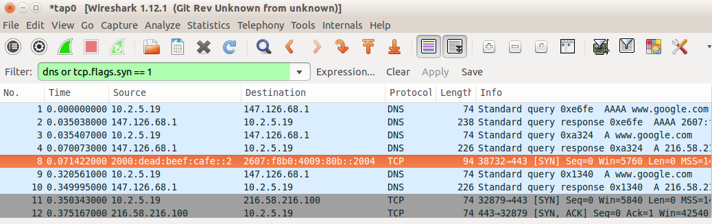
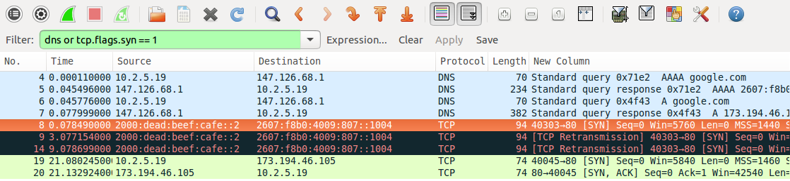
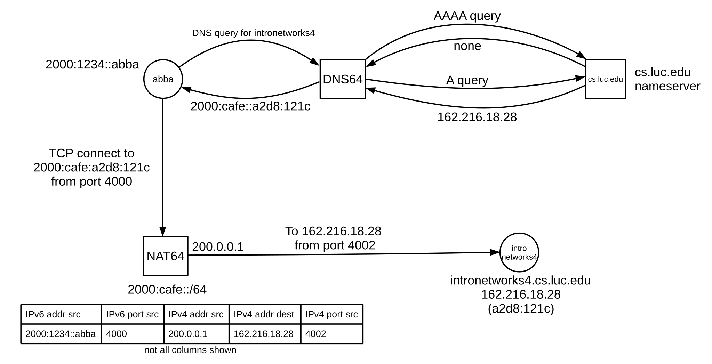

12 IPv6 Additional Features¶
In this chapter we continue describing IPv6, with special attention paid to comparisons between IPv4 and IPv6, interoperability between IPv4 and IPv6, and operating IPv6 in an environment where it is not natively supported.
12.1 Globally Exposed Addresses¶
Perhaps the most striking difference between a contemporary IPv4 network and an IPv6 network is that on the former, most end-user workstation addresses are likely to be “hidden” behind a NAT router (9.7 Network Address Translation). On an IPv6 network, on the other hand, every host address is globally visible, though inbound access may be limited by firewalls. While IPv4 NAT is sometimes claimed to provide better security, its real benefit is that it enables sites to cope with the limited number of IPv4 addresses available. (IPv6-only networks do often use a form of NAT to allow connectivity to IPv4-only servers.)
In addition to limiting the number of IPv4 addresses needed, legacy IPv4 NAT routers provide a measure of each of privacy, security and nuisance. Privacy in IPv6 can be handled, as in the previous chapter, through private or temporary addresses. Recall that in the IPv6 world such addresses are still globally visible; privacy here means that the address is changed regularly.
The degree of security provided via NAT is mostly due to the fact that all connections must be initiated from the inside; no packet from the outside is allowed through the NAT firewall unless it is a response to a packet sent from the inside. This feature, however, can also be implemented via a conventional firewall (IPv4 or IPv6), without address translation. Furthermore, given such a conventional firewall, it is then straightforward to modify it so as to support limited and regulated connections from the outside world as desired; an analogous modification of a NAT router is more difficult. (That said, a blanket ban on IPv6 connections initiated from the outside can prove as frustrating as IPv4 NAT.)
A second security benefit for hiding IPv4 addresses is that with IPv4 it is easy to map a /24 subnet by pinging or otherwise probing each of the 254 possible hosts; such mapping may reveal internal structure. In IPv6 such mapping is meant to be impractical as a /64 subnet has 264 ≃ 18 quintillion hosts (though see the randomness note in 11.2.1 Interface identifiers). If the low-order 64 bits of a host’s IPv6 address are chosen with sufficient randomness, finding the host by probing is virtually impossible; see exercise 4.0 of the previous chapter.
As for nuisance, NAT has always broken protocols that involve negotiation of new connections (eg TFTP, FTP, or SIP, used by VoIP); IPv6 has the potential to make these much easier to manage. That said, a strict firewall rule blocking all inbound connections would eliminate this potential benefit.
12.2 ICMPv6¶
RFC 4443 defines an updated version of the ICMP protocol for IPv6. As with the IPv4 version, messages are identified by 8-bit type and code (subtype) fields, making it reasonably easy to add new message formats. We have already seen the ICMP messages that make up Neighbor Discovery (11.6 Neighbor Discovery).
Unlike ICMPv4, ICMPv6 distinguishes between informational and error messages by the first bit of the type field. Unknown informational messages are simply dropped, while unknown error messages must be handed off, if possible, to the appropriate upper-layer process. For example, “[UDP] port unreachable” messages are to be delivered to the UDP sender of the undeliverable packet.
ICMPv6 includes an IPv6 version of Echo Request / Echo Reply, upon which the “ping6” command (12.5.1 ping6) is based; unlike with IPv4, arriving IPv6 echo-reply messages are delivered to the process that generated the corresponding echo request. The base ICMPv6 specification also includes formats for the error conditions below; this list is somewhat cleaner than the corresponding ICMPv4 list:
Destination Unreachable
In this case, one of the following numeric codes is returned:
- No route to destination, returned when a router has no next_hop entry.
- Communication with destination administratively prohibited, returned when a router has a next_hop entry, but declines to use it for policy reasons. Codes 5 and 6, below, are special cases of this situation; these more-specific codes are returned when appropriate.
- Beyond scope of source address, returned when a router is, for example, asked to route a packet to a global address, but the return address is not, eg is unique-local. In IPv4, when a host with a private address attempts to connect to a global address, NAT is almost always involved.
- Address unreachable, a catchall category for routing failure not covered by any other message. An example is if the packet was successfully routed to the last_hop router, but Neighbor Discovery failed to find a LAN address corresponding to the IPv6 address.
- Port unreachable, returned when, as in ICMPv4, the destination host does not have the requested UDP port open.
- Source address failed ingress/egress policy, see code 1.
- Reject route to destination, see code 1.
Packet Too Big
This is like ICMPv4’s “Fragmentation Required but DontFragment flag set”; IPv6 however has no router-based fragmentation.
Time Exceeded
This is used for cases where the Hop Limit was exceeded, and also where source-based fragmentation was used and the fragment-reassembly timer expired.
Parameter Problem
This is used when there is a malformed entry in the IPv6 header, an unrecognized Next Header type, or an unrecognized IPv6 option.
_node information:
12.2.1 Node Information Messages¶
ICMPv6 also includes Node Information (NI) Messages, defined in RFC 4620. One form of NI query allows a host to be asked directly for its name; this is accomplished in IPv4 via reverse-DNS lookups (10.1.3 Other DNS Records). Other NI queries allow a host to be asked for its other IPv6 addresses, or for its IPv4 addresses. Recipients of NI queries may be configured to refuse to answer.
12.3 IPv6 Subnets¶
In the IPv4 world, network managers sometimes struggle to divide up a limited address space into a pool of appropriately sized subnets. In IPv6, this is much simpler: all subnets are of size /64, following the guidelines set out in 11.3 Network Prefixes.
There is one common exception: RFC 6164 permits the use of 127-bit prefixes at each end of a point-to-point link. The 128th bit is then 0 at one end and 1 at the other.
A site receiving from its provider an address prefix of size /56 can assign up to 256 /64 subnets. As with IPv4, the reasons for IPv6 subnetting are to join incompatible LANs, to press intervening routers into service as inter-subnet firewalls, or otherwise to separate traffic.
The diagram below shows a site with an external prefix of 2001::/62, two routers R1 and R2 with interfaces numbered as shown, and three internal LANS corresponding to three subnets 2001:0:0:1::/64, 2001:0:0:2::/64 and 2001:0:0:3::/64. The subnet 2001:0:0:0::/64 (2001::/64) is used to connect to the provider.
Interface 0 of R1 would be assigned an address from the /64 block 2001:0:0:0/64, perhaps 2001::2.
R1 will announce over its interface 1 – via router advertisements – that it has a route to ::/0, that is, it has the default route. It will also advertise via interface 1 the on-link prefix 2001:0:0:1::/64.
R2 will announce via interface 1 its routes to 2001:0:0:2::/64 and 2001:0:0:3::/64. It will also announce the default route on interfaces 2 and 3. On interface 2 it will advertise the on-link prefix 2001:0:0:2::/64, and on interface 3 the prefix 2001:0:0:3::/64. It could also, as a backup, advertise prefix 2001:0:0:1::/64 on its interface 1. On each subnet, only the subnet’s on-link prefix is advertised.
12.3.1 Subnets and /64¶
Fixing the IPv6 division of prefix and host (interface) lengths at 64 bits for each is a compromise. While it does reduce the maximum number of subnets from 2128 to 264, in practice this is not a realistic concern, as 264 is still an enormous number.
By leaving 64 bits for host identifiers, this 64/64 split leaves enough room for the privacy mechanisms of 11.7.2.1 SLAAC privacy and 11.7.3 DHCPv6 to provide reasonable protection.
Much of the recent motivation for considering divisions other than 64/64 is grounded in concerns about ISP address-allocation policies. By declaring that users should each receive a /64 allocation, one hope is that users will in fact get enough for several subnets. Even a residential customer with only, say, two hosts and a router needs more than a single /64 address block, because the link from ISP to customer needs to be on its own subnet (it could use a 127-bit prefix, as above, but many customers would in fact have a need for multiple /64 subnets). By requiring /64 for a subnet, the hope is that users will all be allocated, for example, prefixes of at least /60 (16 subnets) or even /56 (256 subnets).
Even if that hope does not pan out, the 64/64 rule means that every user should at least get a /64 allocation.
On the other hand, if users are given only /64 blocks, and they want to use subnets, then they have to break the 64/64 rule locally. Perhaps they can create four subnets each with a prefix of length 66 bits, and each with only 62 bits for the host identifier. Wanting to do that in a standard way would dictate more flexibility in the prefix/host division.
But if the prefix/host division becomes completely arbitrary, there is nothing to stop ISPs from handing out prefixes with lengths of /80 (leaving 48 host bits) or even /120.
The general hope is that ISPs will not be so stingy with prefix lengths. But with IPv6 adoption still relatively modest, how this will all work out is not yet clear. In the IPv4 world, users use NAT (9.7 Network Address Translation) to create as many subnets as they desire. In the IPv6 world, NAT is generally considered to be a bad idea.
Finally, in theory it is possible to squeeze a site with two subnets onto a single /64 by converting the site’s main router to a switch; all the customer’s hosts now connect on an equal footing to the ISP. But this means making it much harder to use the router as a firewall, as described in 12.1 Globally Exposed Addresses. For most users, this is too risky.
12.4 Using IPv6 and IPv4 Together¶
In this section we will assume that IPv6 connectivity exists at a site; if it does not, see 12.6 IPv6 Connectivity via Tunneling.
If IPv6 coexists on a client machine with IPv4, in a so-called dual-stack configuration, which is used? If the client wants to connect using TCP to an IPv4-only website (or to some other network service), there is no choice. But what if the remote site also supports both IPv4 and IPv6?
The first step is the DNS lookup, triggered by the application’s call to the appropriate address-lookup library procedure; in the Java stalk example of 16.1.3.3 The Client we use InetAddress.getByName(). In the C language, address lookup is done with getaddrinfo() or (the now-deprecated) gethostbyname(). The DNS system on the client then contacts its DNS resolver and asks for the appropriate address record corresponding to the server name.
For IPv4 addresses, DNS maintains so-called “A” records, for “Address”. The IPv6 equivalent is the “AAAA” record, for “Address four times longer”. A dual-stack machine usually requests both. The Internet Draft draft-vavrusa-dnsop-aaaa-for-free proposes that, whenever a DNS server delivers an IPv4 A record, it also includes the corresponding AAAA record, much as IPv4 CNAME records are sent with piggybacked corresponding A records (10.1.2 nslookup and dig). The DNS requests are sent to the client’s pre-configured DNS-resolver address (probably set via DHCP).
DNS itself can run over either IPv4 or IPv6. A DNS server (authoritative nameserver or just resolver) using only IPv4 can answer IPv6 AAAA-record queries, and a DNS server using only IPv6 can answer IPv4 A-record queries. Ideally each nameserver would eventually support both IPv4 and IPv6 for all queries, though it is common for hosts with newly enabled IPv6 connectivity to continue to use IPv4-only resolvers. See RFC 4472 for a discussion of some operational issues.
Here is an example of DNS requests for A and AAAA records made with the nslookup utility from the command line. (In this example, the DNS resolver was contacted using IPv4.)
nslookup -query=A facebook.comName: facebook.comAddress: 173.252.120.6nslookup -query=AAAA facebook.comfacebook.com has AAAA address 2a03:2880:2130:cf05:face:b00c:0:1
A few sites have IPv6-only DNS names. If the DNS query returns only an AAAA record, IPv6 must be used. One example in 2015 is ipv6.google.com. In general, however, IPv6-only names such as this are recommended only for diagnostics and testing. The primary DNS names for IPv4/IPv6 sites should have both types of DNS records, as in the Facebook example above (and as for google.com).
If the client application uses a library call like Java’s InetAddress.getByName(), which returns a single IP address, the client will then attempt to connect to the address returned. If an IPv4 address is returned, the connection will use IPv4, and similarly with IPv6. If an IPv6 address is returned and IPv6 connectivity is not working, then the connection will fail.
For such an application, the DNS resolver library thus effectively makes the IPv4-or-IPv6 decision. RFC 6724, which we encountered above in 11.7.2 Stateless Autoconfiguration (SLAAC), provides a configuration mechanism, through a small table of IPv6 prefixes and precedence values such as the following.
| prefix | precedence | |
|---|---|---|
| ::1/128 | 50 | IPv6 loopback |
| ::/0 | 40 | “default” match |
| 2002::/16 | 30 | 6to4 address; see sidebar in 12.6 IPv6 Connectivity via Tunneling |
| ::ffff:0:0/96 | 10 | Matches embedded IPv4 addresses; see 11.3 Network Prefixes |
| fc00::/7 | 3 | unique-local plus reserved; see 11.3 Network Prefixes |
An address is assigned a precedence by looking it up in the table, using the longest-match rule (14.1 Classless Internet Domain Routing: CIDR); a list of addresses is then sorted in decreasing order of precedence. There is no entry above for link-local addresses, but by default they are ranked below global addresses. This can be changed by including the link-local prefix fe80::/64 in the above table and ranking it higher than, say, ::/0.
The default configuration is generally to prefer IPv6 if IPv6 is available; that is, if an interface has an IPv6 address that is (or should be) globally routable. Given the availability of both IPv6 and IPv4, a preference for IPv6 is implemented by assigning the prefix ::/0 – matching all IPv6 addresses – a higher precedence than that assigned to the IPv4-specific prefix ::ffff:0:0/96. This is done in the table above.
Preferring IPv6 does not always work out well, however; many hosts have IPv6 connectivity through tunneling that may be slow, limited or outright down. The precedence table can be changed to prefer IPv4 over IPv6 by raising the precedence for the prefix ::ffff:0.0.0.0/96 to a value higher than that for ::/0. Such system-wide configuration is usually done on Linux hosts by editing /etc/gai.conf and on Windows via the netsh command; for example, netsh interface ipv6 show prefixpolicies.
We can see this systemwide IPv4/IPv6 preference in action using OpenSSH (see 29.5.1 SSH), between two systems that each support both IPv4 and IPv6 (the remote system here is intronetworks.cs.luc.edu). With the IPv4-matching prefix precedence set high, connection is automatically via IPv4:
/etc/gai.conf:precedence ::ffff:0:0/96 100ssh:Connecting to intronetworks.cs.luc.edu [162.216.18.28] ...
With the IPv4-prefix precedence set low, new connections use IPv6:
/etc/gai.conf:precedence ::ffff:0:0/96 10ssh:Connecting to intronetworks.cs.luc.edu [2600:3c03::f03c:91ff:fe69:f438] ...
Applications can also use a DNS-resolver call that returns a list of all addresses matching a given hostname. (Often this list will have just two entries, for the IPv4 and IPv6 addresses, though round-robin DNS (10.1 DNS) can make the list much longer.) The C language getaddrinfo() call returns such a list, as does the Java InetAddress.getAllByName(). The RFC 6724 preferences then determine the relative order of IPv4 and IPv6 entries in this list.
If an application requests such a list of all addresses, probably the most common strategy is to try each address in turn, according to the system-provided order. In the example of the previous paragraph, OpenSSH does in fact request a list of addresses, using getaddrinfo(), but, according to its source code, tries them in order and so usually connects to the first address on the list, that is, to the one preferred by the RFC 6724 rules. Alternatively, an application might implement user-specified configuration preferences to decide between IPv4 and IPv6, though user interest in this tends to be limited (except, perhaps, by readers of this book).
12.4.1 Happy Eyeballs¶
The “Happy Eyeballs” algorithm, RFC 8305, offers a more nuanced strategy for deciding whether an application should connect using IPv4 or IPv6. Initially, the client might try the IPv6 address (that is, will send TCP SYN to the IPv6 address, 17.3 TCP Connection Establishment). If that connection does not succeed within, say, 250 ms, the client would try the IPv4 address. 250 ms is barely enough time for the TCP handshake to succeed; it does not allow – and is not meant to allow – sufficient time for a retransmission. The client falls back to IPv4 well before the failure of IPv6 is certain.
A Happy-Eyeballs client is also encouraged to cache the winning protocol, so for the next connection the client will attempt to use only the protocol that was successful before. The cache timeout is to be on the order of 10 minutes, so that if IPv6 connectivity failed and was restored then the client can resume using it with only moderate delay. Unfortunately, if the Happy Eyeballs mechanism is implemented at the application layer, which is often the case, then the scope of this cache may be limited to the particular application.
As IPv6 becomes more mainstream, Happy Eyeballs implementations are likely to evolve towards placing greater confidence in the IPv6 option. One simple change is to increase the time interval during which the client waits for an IPv6 response before giving up and trying IPv4.
We can test for the Happy Eyeballs mechanism by observing traffic with WireShark. As a first example, we imagine giving our client host a unique-local IPv6 address (in addition to its automatic link-local address); recall that unique-local addresses are not globally routable. If we now were to connect to, say, google.com, and monitor the traffic using WireShark, we would see a DNS AAAA query (IPv6) for “google.com” followed immediately by a DNS A query (IPv4). The subsequent TCP SYN, however, would be sent only to the IPv4 address: the client host would know that its IPv6 unique-local address is not routable, and it is not even tried.
Next let us change the IPv6 address for the client host to 2000:dead:beef:cafe::2, through manual configuration (12.5.3 Manual address configuration), and without providing an actual IPv6 connection. (We also manually specify a fake default router.) This address is part of the 2000::/3 block, and is supposed to be globally routable.
We now try two connections to google.com, TCP port 80. The first is via the Firefox browser.

We see two DNS queries, AAAA and A, in packets 1-4, followed by the first attempt (highlighted in orange) at T=0.071 to negotiate a TCP connection via IPv6 by sending a TCP SYN packet (17.3 TCP Connection Establishment) to the google.com IPv6 address 2607:f8b0:4009:80b::200e. Only 250 ms later, at T=0.321, we see a second DNS A-query (IPv4), followed by an ultimately successful connection attempt using IPv4 starting at T=0.350. This particular version of Firefox, in other words, has implemented the Happy Eyeballs dual-stack mechanism.
Now we try the connection using the previously mentioned OpenSSH application, using -p 80 to connect to port 80. (This example was generated somewhat later; DNS now returns 2607:f8b0:4009:807::1004 as google.com’s IPv6 address.)

We see two DNS queries, AAAA and A, in packets numbered 4 and 6 (pale blue); these are made by the client from its IPv4 address 10.2.5.19. Half a millisecond after the A query returns (packet 7), the client sends a TCP SYN packet to google.com’s IPv6 address; this packet is highlighted in orange. This SYN packet is retransmitted 3 seconds and then 9 seconds later (in black), to no avail. After 21 seconds, the client gives up on IPv6 and attempts to connect to google.com at its IPv4 address, 173.194.46.105; this connection (in green) is successful. The long delay shows that Happy Eyeballs was not implemented by OpenSSH, which its source code confirms.
(The host initiating the connections here was running Ubuntu 10.04 LTS, from 2010. The ultimately failing TCP connection gives up after three tries over only 21 seconds; newer systems make more tries and take much longer before they abandon a connection attempt.)
12.5 IPv6 Examples Without a Router¶
In this section we present a few IPv6 experiments that can be done without an IPv6 connection and without even an IPv6 router. Without a router, we cannot use SLAAC or DHCPv6. We will instead use link-local addresses, which require the specification of the interface along with the address, and manually configured unique-local (11.3 Network Prefixes) addresses. One practical problem with link-local addresses is that application documentation describing how to include a specification of the interface is sometimes sparse.
12.5.1 ping6¶
The IPv6 analogue of the familiar ping command, used to send ICMPv6 Echo Requests, is ping6 on Linux and Mac systems and ping -6 on Windows. The ping6 command supports an option to specify the interface; eg -I eth0; as noted above, this is mandatory when sending to link-local addresses. Here are a few ping6 examples:
ping6 ::1: This pings the host’s loopback address; it should always work.
ping6 -I eth0 ff02::1: This pings the all-nodes multicast group on interface eth0. Here are two of the answers received:
- 64 bytes from fe80::3e97:eff:fe2c:2beb (this is the host I am pinging from)
- 64 bytes from fe80::2a0:ccff:fe24:b0e4 (a second Linux host)
Answers were also received from a Windows machine and an Android phone. A VoIP phone – on the same subnet but supporting IPv4 only – remained mute, despite VoIP’s difficulties with IPv4 NAT that would be avoided with IPv6. In lieu of the interface option -I eth0, the “zone-identifier” syntax ping6 ff02::1%eth0 also usually works; see the following section.
ping6 -I eth0 fe80::2a0:ccff:fe24:b0e4: This pings the link-local address of the second Linux host answering the previous query; again, the %eth0 syntax should also work. The destination interface identifier here uses the now-deprecated EUI-64 format; note the “ff:fe” in the middle. Also note the flipped seventh bit of the two bytes 02a0; the destination has Ethernet address 00:a0:cc:24:b0:e4.
12.5.2 TCP connections using link-local addresses¶
The next experiment is to create a TCP connection. Some commands, like ping6 above, may provide for a way of specifying the interface as a command-line option. Failing that, RFC 4007 defines the concept of a zone identifier that is appended to the IPv6 address, separated from it by a “%” character, to specify the link involved. On Linux systems the zone identifier is most often the interface name, eg eth0 or ppp1. Numeric zone identifiers are also used, in which case it represents the number of the particular interface in some designated list and can be called the zone index. On Windows systems the zone index for an interface can often be inferred from the output of the ipconfig command, which should include it with each link-local address. The use of zone identifiers is often restricted to literal (numeric) IPv6 addresses, perhaps because there is little demand for symbolic link-local addresses.
The following link-local address with zone identifier creates an ssh connection to the second Linux host in the example of the preceding section:
ssh fe80::2a0:ccff:fe24:b0e4%eth0
That the ssh service is listening for IPv6 connections can be verified on that host by netstat -a | grep -i tcp6. That the ssh connection actually used IPv6 can be verified by, say, use of a network sniffer like WireShark (for which the filter expression ipv6 or ip.version == 6 is useful). If the connection fails, but ssh works for IPv4 connections and shows as listening in the tcp6 list from the netstat command, a firewall-blocked port is a likely suspect.
12.5.3 Manual address configuration¶
The use of manually configured addresses is also possible, for either global or unique-local (ie not connected to the Internet) addresses. However, without a router there can be no Prefix Discovery, 11.6.2 Prefix Discovery, and this may create subtle differences.
The first step is to pick a suitable prefix; in the example below we use the unique-local prefix fd37:beef:cafe::/64 (though this particular prefix does not meet the randomness rules for unique-local prefixes). We could also use a globally routable prefix, but here we do not want to mislead any hosts about reachability.
Without a router as a source of Router Advertisements, we need some way to specify both the prefix and the prefix length; the latter can be thought of as corresponding to the IPv4 subnet mask. One might be forgiven for imagining that the default prefix length would be /64, given that this is the only prefix length generally allowed (11.3 Network Prefixes), but this is often not the case. In the commands below, the prefix length is included at the end as the /64. This usage is just slightly peculiar, in that in the IPv4 world the slash notation is most often used only with true prefixes, with all bits zero beyond the slash length. (The Linux ip command also uses the slash notation in the sense here, to specify an IPv4 subnet mask, eg 10.2.5.37/24. The ifconfig and Windows netsh commands specify the IPv4 subnet mask the traditional way, eg 255.255.255.0.)
Hosts will usually assume that a prefix configured this way with a length represents an on-link prefix, meaning that neighbors sharing the prefix are reachable directly via the LAN.
We can now assign the low-order 64 bits manually. On Linux this is done with:
- host1:
ip -6 address add fd37:beef:cafe::1/64 dev eth0 - host2:
ip -6 address add fd37:beef:cafe::2/64 dev eth0
Macintosh systems can be configured similarly except the name of the interface is probably en0 rather than eth0. On Windows systems, a typical IPv6-address-configuration command is
netsh interface ipv6 add address "Local Area Connection" fd37:beef:cafe::1/64
Now on host1 the command
ssh fd37:beef:cafe::2
should create an ssh connection to host2, again assuming ssh on host2 is listening for IPv6 connections. Because the addresses here are not link-local, /etc/host entries may be created for them to simplify entry.
Assigning IPv6 addresses manually like this is not recommended, except for experiments.
On a LAN not connected to the Internet and therefore with no actual routing, it is nonetheless possible to start up a Router Advertisement agent (11.6.1 Router Discovery), such as radvd, with a manually configured /64 prefix. The RA agent will include this prefix in its advertisements, and reasonably modern hosts will then construct full addresses for themselves from this prefix using SLAAC. IPv6 can then be used within the LAN. If this is done, the RA agent should also be configured to announce only a meaningless route, such as ::/128, or else nodes may falsely believe the RA agent is providing full Internet connectivity.
12.6 IPv6 Connectivity via Tunneling¶
The best option for IPv6 connectivity is native support by one’s ISP. In such a situation one’s router should be sending out Router Advertisement messages, and from these all the hosts should discover how to reach the IPv6 Internet.
If native IPv6 support is not forthcoming, however, a short-term option is to connect to the IPv6 world using packet tunneling (less often, some other VPN mechanism is used). RFC 4213 outlines the common 6in4 strategy of simply attaching an IPv4 header to the front of the IPv6 packet; it is very similar to the IPv4-in-IPv4 encapsulation of 9.9.1 IP-in-IP Encapsulation.
There are several available providers for this service; they can be found by searching for “IPv6 tunnel broker”. Some tunnel brokers provide this service at no charge.
The basic idea behind 6in4 tunneling is that the tunnel broker allocates you a /64 prefix out of its own address block, and agrees to create an IPv4 tunnel to you using 6in4 encapsulation. All your IPv6 traffic from the Internet is routed by the tunnel broker to you via this tunnel; similarly, IPv6 packets from your site reach the outside world using this same tunnel. The tunnel, in other words, is your link to an IPv6 router.
Generally speaking, the MTU of the tunnel must be at least 20 bytes less than the MTU of the physical interface, to allow space for the header. At the near end this requires a local configuration change; tunnel brokers often provide a way for users to set the MTU at the far end. Practical MTU values vary from a mandatory IPv6 minimum of 1280 to the Ethernet maximum of 1500−20 = 1480.
Setting up the tunnel does not involve creating a stateful connection. All that happens is that the tunnel client (ie your endpoint) and the broker record each other’s IPv4 addresses, and agree to accept encapsulated IPv6 packets from one another provided these two endpoint addresses are used as source and destination. The tunnel at the client end is represented by an appropriate “virtual network interface”, eg sit0 or gif0 or IP6Tunnel. Tunnel providers generally supply the basic commands necessary to get the tunnel interface configured and the MTU set.
Once the tunnel is created, the tunnel interface at the client end must be assigned an IPv6 address and then a (default) route. We will assume that the /64 prefix for the broker-to-client link is 2001:470:0:10::/64, with the broker at 2001:470:0:10::1 and with the client to be assigned the address 2001:470:0:10::2. The address and route are set up on the client with the following commands (Linux/Mac/Windows respectively; interface names may vary, and some commands assume the interface represents a point-to-point link):
ip addr add 2001:470:0:10::2/64 dev sit1
ip route add ::/0 dev sit1
ifconfig gif0 inet6 2001:470:0:10::2 2001:470:0:10::1 prefixlen 128
route -n add -inet6 default 2001:470:0:10::1
netsh interface ipv6 add address IP6Tunnel 2001:470:0:10::2
netsh interface ipv6 add route ::/0 IP6Tunnel 2001:470:0:10::1
At this point the tunnel client should have full IPv6 connectivity!
To verify this, one can use ping6, or visit IPv6-only versions of websites (eg intronetworks6.cs.luc.edu), or visit IPv6-identifying sites such as IsMyIPv6Working.com. Alternatively, one can often install a browser plugin to at least make visible whether IPv6 is used. Finally, one can use netcat with the -6 option to force IPv6 use, following the HTTP example in 17.7.1 netcat again.
There is one more potential issue. If the tunnel client is behind an IPv4 NAT router, that router must deliver arriving encapsulated 6in4 packets correctly. This can sometimes be a problem; encapsulated 6in4 packets are at some remove from the TCP and UDP traffic that the usual consumer-grade NAT router is primarily designed to handle. Careful study of the router forwarding settings may help, but sometimes the only fix is a newer router. A problem is particularly likely if two different inside clients attempt to set up tunnels simultaneously; see 9.9.1 IP-in-IP Encapsulation.
12.6.1 IPv6 firewalls¶
It is strongly recommended that an IPv6 host block new inbound connections over its IPv6 interface (eg the tunnel interface), much as an IPv4 NAT router would do. Exceptions may be added as necessary for essential services (such as ICMPv6). Using the linux ip6tables firewall command, with IPv6-tunneled interface sit1, this might be done with the following:
ip6tables --append INPUT --in-interface sit1 --protocol icmpv6 --jump ACCEPT
ip6tables --append INPUT --in-interface sit1 --match conntrack --ctstate ESTABLISHED,RELATED --jump ACCEPT
ip6tables --append INPUT --in-interface sit1 --jump DROP
At this point the firewall should be tested by attempting to access inside hosts from the outside. At a minimum, ping6 from the outside to any global IPv6 address of any inside host should fail if the ICMPv6 exception above is removed (and should succeed if the ICMPv6 exception is restored). This can be checked by using any of several websites that send pings on request; such sites can be found by searching for “online ipv6 ping”. There are also a few sites that will run a remote IPv6 TCP port scan; try searching for “online ipv6 port scan”. See also exercise 4.0.
12.6.2 Setting up a router¶
The next step, if desired, is to set up the tunnel endpoint as a router, so other hosts at the client site can also enjoy IPv6 connectivity. For this we need a second /64 prefix; we will assume this is 2001:470:0:20::/64 (note this is not an “adjacent” /64; the two /64 prefixes cannot be merged into a /63). Let R be the tunnel endpoint, with eth0 its LAN interface, and let A be another host on the LAN.
We will use the linux radvd package as our Router Advertisement agent (11.6.1 Router Discovery). In the radvd.conf file, we need to say that we want the LAN prefix 2001:470:0:20::/64 advertised as on-link over interface eth0:
interface eth0 {
...
prefix 2001:470:0:20::/64
{
AdvOnLink on; # advertise this prefix as on-link
AdvAutonomous on; # allows SLAAC with this prefix
};
};
If radvd is now started, other LAN hosts (eg A) will automatically get the prefix (and thus a full SLAAC address). Radvd will automatically share R’s default route (::/0), taking it not from the configuration file but from R’s routing table. (It may still be necessary to manually configure the IPv6 address of R’s eth0 interface, eg as 2001:470:0:20::1.)
On the author’s version of host A, the IPv6 route is now (with some irrelevant attributes not shown)
default via fe80::2a0:ccff:fe24:b0e4 dev eth0
That is, host A routes to R via the latter’s link-local address, always guaranteed on-link, rather than via the subnet address.
If radvd or its equivalent is not available, the manual approach is to assign R and A each a /64 address:
On host R:ip -6 address add 2001:470:0:20::1/64 dev eth0On host A:ip -6 address add 2001:470:0:20::2/64 dev eth0
Because of the “/64” here (12.5.3 Manual address configuration), R and A understand that they can reach each other via the LAN, and do so. Host A also needs to be told of the default route via R:
On host A:ip -6 route add ::/0 via 2001:470:0:10::1 dev eth0
Here we use the subnet address of R, but we could have used R’s link-local address as well.
It is likely that A’s eth0 will also need its MTU configured, so that it matches that of R’s virtual tunnel interface (which, recall, should be at least 20 bytes less than the MTU of R’s physical outbound interface).
12.6.2.1 A second router¶
Now let us add a second router R2, as in the diagram below. The R──R2 link is via a separate Ethernet LAN, not a point-to-point link. The LAN with A is, as above, subnet 2001:470:0:20::/64.
In this case, it is R2 that needs to run the Router Advertisement agent (eg radvd). If this were an IPv4 network, the interfaces eth0 and eth1 on the R──R2 link would need IPv4 addresses from some new subnet (though the use of private addresses is an option). We can’t use unnumbered interfaces (9.8 Unnumbered Interfaces), because the R──R2 connection is not a point-to-point link.
But with IPv6, we can configure the R──R2 routing to use only link-local addresses. Let us assume for mnemonic convenience these are as follows:
R’s eth0:fe80::ba5e:ba11R2’s eth1:fe80::dead:beef
R2’s forwarding table will have a default route with next_hop fe80::ba5e:ba11 (R). Similarly, R’s forwarding table will have an entry for destination subnet 2001:470:0:20::/64 with next_hop fe80::dead:beef (R2). Neither eth0 nor eth1 needs any other IPv6 address.
R2’s eth2 interface will likely need a global IPv6 address, eg 2001:470:0:20::1 again. Otherwise R2 may not be able to determine that its eth2 interface is in fact connected to the 2001:470:0:20::/64 subnet.
One advantage of not giving eth0 or eth1 global addresses is that it is then impossible for an outside attacker to reach these interfaces directly. It also saves on subnets, although one hopes with IPv6 those are not in short supply. All routers at a site are likely to need, for management purposes, an IP address reachable throughout the site, but this does not have to be globally visible.
12.7 IPv6-to-IPv4 Connectivity¶
What happens if you switch to IPv6 completely, perhaps because your ISP (or phone provider) has run out of IPv4 addresses? Some of the time – hopefully more and more of the time – you will only need to talk to IPv6 servers. For example, the DNS names facebook.com and google.com each correspond to an IPv4 address, but also to an IPv6 address (above). But what do you do if you want to reach an IPv4-only server? Such servers are expected to continue operating for a long time to come. It is necesary to have some sort of centralized IPv6-to-IPv4 translator.
An early strategy was NAT-PT (RFC 2766). The translator was assigned a /96 prefix. The IPv6 host would append to this prefix the 32-bit IPv4 address of the destination, and use the resulting address to contact the IPv4 destination. Packets sent to this address would be delivered via IPv6 to the translator, which would translate the IPv6 header into IPv4 and then send the translated packet on to the IPv4 destination. As in IPv4 NAT (9.7 Network Address Translation), the reverse translation will typically involve TCP port numbers to resolve ambiguities. This approach requires the IPv6 host to be aware of the translator, and is limited to TCP and UDP (because of the use of port numbers). Due to these and several other limitations, NAT-PT was formally deprecated in RFC 4966.
The replacement protocol is NAT64, documented in RFC 6146. This is also based on address translation, and, as such, cannot allow connections initiated from IPv4 hosts to IPv6 hosts. It is, however, transparent to both the IPv6 and IPv4 hosts involved, and is not restricted to TCP (though only TCP, UDP and ICMP are supported by RFC 6146). It uses a special DNS variant, DNS64 (RFC 6147), as a companion protocol.
To use NAT64, an IPv6 client sends out its ordinary DNS query to find the addresses of the destination server. The DNS resolver (10.1 DNS) receiving the request must use DNS64. If the destination has only an IPv4 address, then the DNS resolver will return to the IPv6 client (as an AAAA record) a synthetic IPv6 address consisting of a prefix and the embedded IPv4 address of the server, much as in NAT-PT above (though multiple prefix-length options exist; see RFC 6052). The prefix belongs to the actual NAT64 translator; any packet addressed to an IPv6 address starting with the prefix will be delivered to the translator. There is no relationship between the NAT64 translator and the DNS64 resolver beyond the fact that the former’s prefix is configured into the latter.
The IPv6 client now uses this synthetic IPv6 address to contact the IPv4 server. Its packets will be routed to the NAT64 translator itself, by virtue of the prefix, much as in NAT-PT. Upon receiving the first packet from the IPv6 client, the NAT64 translator will assign one of its IPv4 addresses to the new connection. As IPv4 addresses are in short supply, this pool of available IPv4 addresses may be small, so NAT64 allows one IPv4 address to be used by many IPv6 clients. To this end, the NAT64 translator will also (for TCP and UDP) establish a port mapping between the incoming IPv6 source port and a port number allocated by the NAT64 to ensure that traffic is uniquely reversable. As with IPv4 NAT, if two IPv6 clients try to contact the same IPv4 server using the same source ports, and are assigned the same NAT64 IPv4 address, then one of the clients will have its port number changed.
If an ICMP query is being sent, the Query Identifier is used in lieu of port numbers. To extend NAT64 to new protocols, an appropriate analog of port numbers must be identified, to allow demultiplexing of multiple connections sharing a single IPv4 address.
After the translation is set up, by creating appropriate table entries, the translated packet is sent on to the IPv4 server address that was embedded in the synthetic IPv6 address. The source address will be the assigned IPv4 address of the translator, and the source port will have been rewritten in accordance with the new port mapping. At this point packets can flow freely between the original IPv6 client and its IPv4 destination, with neither endpoint being aware of the translation (unless the IPv6 client carefully inspects the synthetic address it receives via DNS64). A timer within the NAT64 translator will delete the association between the IPv6 and IPv4 addresses if the connection is not used for a while.
As an example, suppose the IPv6 client has address 2000:1234::abba, and is trying to reach intronetworks4.cs.luc.edu at TCP port 80. It contacts its DNS server, which finds no AAAA record but IPv4 address 162.216.18.28 (in hex, a2d8:121c). It takes the prefix for its NAT64 translator, which we will assume is 2000:cafe::, and returns the synthetic address 2000:cafe::a2d8:121c.

The IPv6 client now tries to connect to 2000:cafe::a2d8:121c, using source port 4000. The first packet arrives at the NAT64 translator, which assigns the connection the outbound IPv4 address of 200.0.0.1, and reassigns the source port on the IPv4 side to 4002. The new IPv4 packet is sent on to 162.216.18.28. The reply from intronetworks4.cs.luc.edu comes back, to ⟨200.0.0.1,4002⟩. The NAT64 translator looks this up and finds that this corresponds to ⟨2000:1234::abba,4000⟩, and forwards it back to the original IPv6 client.
12.7.1 IPv6-to-IPv6 Connectivity¶
While we are on the subject of connectivity, there is a significant lack of connectivity within the IPv6 world: two major ISPs do not connect to one another, neither directly nor indirectly. As of 2022, Cogent Communications and Hurricane Electric have no connectivity via IPv6, and apparently have not connected for some years. This has happened occasionally in the IPv4 world, but usually the ISPs involved come to an agreement quickly.
Each company maintains a looking-glass site (reachable via IPv4), from which one can launch IPv6 pings and traceroutes; these are cogentco.com/en/looking-glass and lg.he.net. From Cogent, one can choose either an IPv4 or an IPv6 ping; the IPv6 ping to he.net fails. The same happens from Hurricane Electric to cogentco.com, though the selection of IPv4 or IPv6 is made after entering the destination.
Ultimately, this situation is due to a disagreement as to who should pay for the interconnection, or who should pay what share. In the language of 15.10 BGP Relationships, both ISPs are top-level backbone providers, or “peers”. Both are generally considered “tier-1”, although a common defining rule for tier-1 providers is that they directly connect to every other Tier 1 provider, and these two do not.
This situation, while definitely a problem, is not necessarily as calamitous as it may sound; IPv6 customers of each may be able to reach all major IPv6 services; they just cannot reach each other. While IPv6, with its general absence of NAT, supports direct connections between individual end-users, most connections are between end-users and servers, and most of these connections still work. Customers of other ISPs typically have full connectivity, including to Cogent and to HE.
12.8 Epilog¶
IPv4 and IPv6 are, functionally, rather similar. However, the widespread use of NAT in the IPv4 world makes IPv4 in practice appear rather different. IPv4 and IPv6 can, of course, coexist side-by-side, as two parallel and independent IP layers. But the demand for IPv4-to-IPv6 connectivity has led to multiple solutions.
12.9 Exercises¶
Exercises may be given fractional (floating point) numbers, to allow for interpolation of new exercises.
1.0. Suppose someone tried to implement ping6 so that, if the address was a link-local address and no interface was specified, the ICMPv6 Echo Request was sent out all non-loopback interfaces. Could the end result be different than conventional ping6 with the correct interface supplied? If so, how likely is this?
2.0. Create an IPv6 ssh connection as in 12.5 IPv6 Examples Without a Router. Examine the connection’s packets using WireShark or the equivalent. Does the TCP handshake (17.3 TCP Connection Establishment) look any different over IPv6?
3.0. Create an IPv6 ssh connection using manually configured addresses as in 12.5.3 Manual address configuration. Again use WireShark or the equivalent to monitor the connection. Is DAD (11.7.1 Duplicate Address Detection) used?
4.0. Suppose host A gets its IPv6 traffic through tunnel provider H, as in 12.6 IPv6 Connectivity via Tunneling. To improve security, A blocks all packets that are not part of connections it has initiated (which is common), and makes no exception for ICMPv6 traffic (which is not a good idea). H is correctly configured to know the MTU of the A–H link. For (a) and (b), this MTU is 1280, the minimum allowed for IPv6. Much of the Internet, however, allows larger MTU values.
A ─── H ─── Internet ─── B
(a). If A attempts to send a larger-than-1280-byte IPv6 packet to remote host B, will A be informed of the resultant failure? Why or why not?
(b). Suppose B attempts to send a larger-than-1280-byte IPv6 packet to A. Will B receive an ICMPv6 Packet Too Big message? Why or why not?
(c). Now suppose the MTU of the A–H link is raised to 1400 bytes. Outline a scenario in which A sends a packet of size greater than 1280 bytes to remote host B, the packet is too big to make it all the way to B, and yet A receives no notification of this.